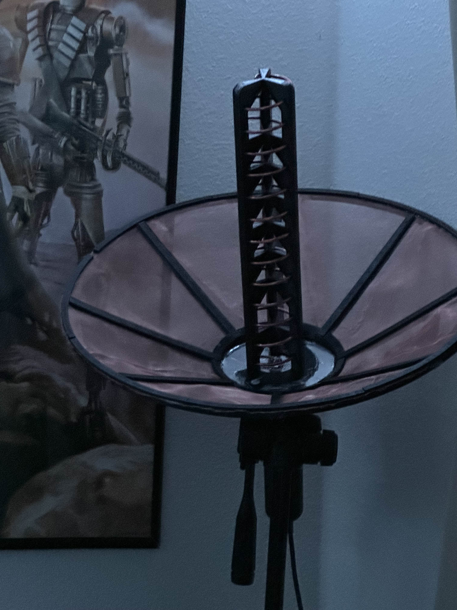

# STG.01 · CAD
A helical, because linear-polarized gets wrecked by Faraday rotation.
Right-hand circularly polarized. NOAA satellites transmit RHCP, so matching it buys you 3 dB over a linear dipole. Helix geometry — four turns, 0.75λ diameter, 0.25λ pitch. At 137 MHz that's ugly big; at 1.69 GHz it's palm-sized, so GOES is the easier target for a first build.
Fusion 360 for the spine, 3mm copper wire wound around a 3D-printed helical jig for repeatability.
# STG.02 · PRINT
PETG, 40% gyroid, because a PLA antenna warps in the Texas sun.
Print time: 14 hours. Four pieces that lap-joint together. Wire channels routed at the exact pitch for the helix — no eyeballing the winding.
# STG.03 · TUNE
VNA → the antenna lies to you until you measure it.
# shell · operator@bench
$ nanovna-cli sweep 1.6e9 1.8e9
freq(MHz) |SWR| |Z|
1600.00 1.82 48.3 - j15.0
1650.00 1.41 52.1 - j06.2
1690.00 1.12 51.8 + j01.1 ← sweet spot
1700.00 1.19 53.4 + j04.8
1800.00 2.24 44.9 + j22.6# STG.04 · CAPTURE
RTL-SDR + an LNA + the sky.
RTL-SDR v3 on a laptop. BiasT-powered LNA at the feedpoint. Gqrx spectrum view, then record to IQ samples when a pass crosses overhead.

# STG.05 · DECODE
noaa-apt → weather image, printed on silicon.
# shell · operator@kali
$ noaa-apt decode noaa19_pass_20250118.wav -o n19.png
Decoding APT... 97% SNR: 42 dB
Demodulating channel A ... done
Demodulating channel B ... done
Saved n19.png (909×1040)